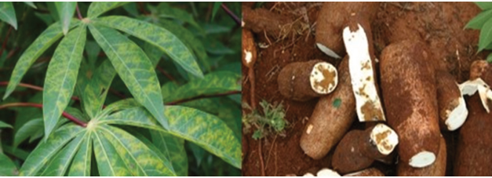
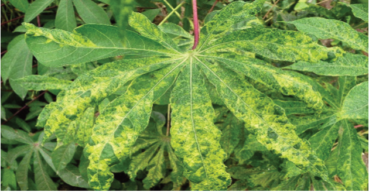
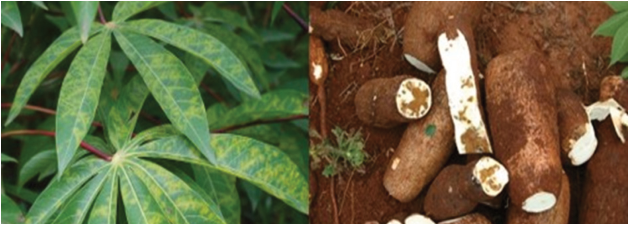

Agriculture for Secondary Schools
Figure 3.10: Cassava brown streak disease symptoms
Source: https://www.plantsci.cam.ac.uk/news/developing-predictive-model-emerging-epidemic-cassava-
sub-saharan-africa
Figure 3.11: Cassava Mosaic disease symptoms
Source: https://plantwiseplusknowledgebank.org/doi/10.1079/PWKB.2014780137
Activity 3.5
1. Pay a visit to your school farm or nearby cassava, banana, or sweet potato
crop fields, observe and perform the following tasks:
(a) Identify some common vermin affecting the crops;
(b) Identify methods that are employed to manage vermin in the studied
crop fields; and
(c) Adopt manageable measures for you and apply them in controlling
vermin in the school crop fields.
2. Summarise your observations in your portfolio.
54
Student’s Book Form Two